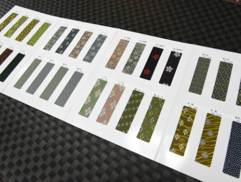
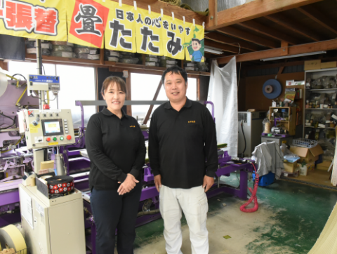
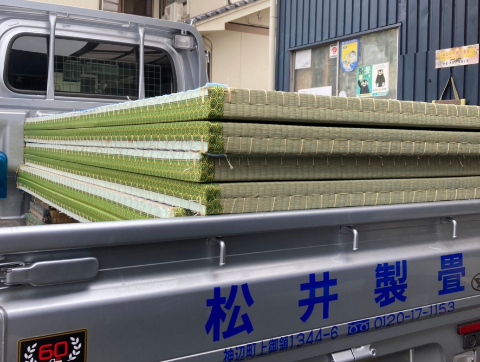
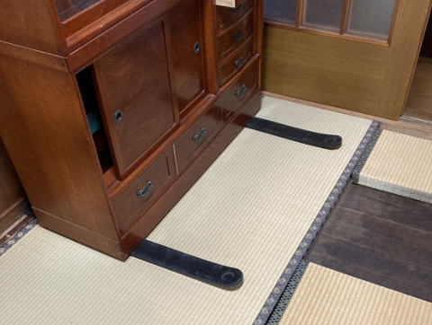
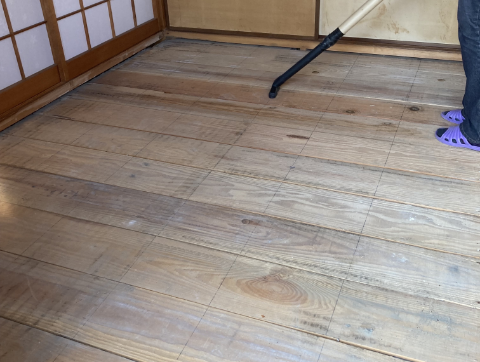
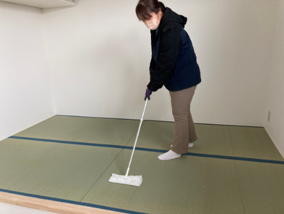
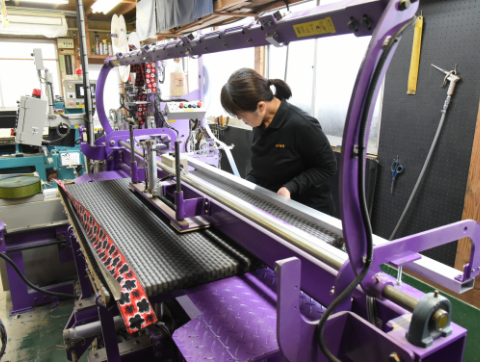
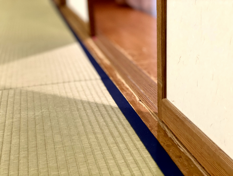

自社施工で最後まで責任を持ってお届けします。
ご依頼いただいたお客様にお得な無料サービスを実施！！
-

- service.01お見積りは無料
- お値段はやっぱり気になることですね。 お見積もりは無料で承っていますので、畳１枚からでもご遠慮なくお申し付けください。 サンプル品の持参も可能です。
-

- service.02丁寧・親切な対応
- 当然ですが、お客様に対して常に丁寧で親切な対応を心がけています。
分からないことは何でもお尋ねください。
-

- service.03夕方納品／即日施工
- 表替え・裏返しなら、朝に畳をお引取りして当日の夕方に納品可能です。
-

- service.04家具の移動無料
- 当然ですが、お客様に対して常に丁寧で親切な対応を心がけています。
分からないことは何でもお尋ねください。
-

- service.05畳取り外し後の清掃
- 家具の移動が必要な場合もご安心ください。当店のスタッフが丁寧に移動させて、作業させていただきます。
※ピアノなどの重量家具は有料になる場合もございます。
-

- service.06畳の拭き上げサービス
- 張り替えた畳の上で、すぐに快適に生活していただけるように、畳の拭き掃除をおこなっています。
-

- service.07日曜・祝日でもご対応
- 当店は日曜・祝日でもご希望があれば対応いたします。
平日お忙しいお客様もぜひ安心してご依頼ください。
-

- service.08すき間、でこぼこ、段差調査無料
- すき間や段差ができている場合の寸法調整や段差調整を無料でお直しいたしますので、お気軽にお申し付けください。
Q&Aよくある質問
-
環境にもよりますが、一般的には価格が高い畳の方が長持ちすると言えます。
畳表の原材料イグサは、同じ環境で使用した場合、価格の高いもの（良質なもの）ほど、耐久性があります。
高級な畳でも、適切なお手入れをして使うことで、結果的に経済的です。 -
残念ながら、難しいとお考えください。
同じ畳数の部屋でも、縦横の長さは微妙に違っています。畳は通常それぞれの部屋のサイズに合わせでオーダーメイドされています。
そのため一枚一枚の畳のサイズがそれぞれ違うため、他の部屋に隙間なく敷き込むことは、困難となります。 -
軽度なカビであれば、お客様ご自身で対応できます。
まずは、乾燥させてください。
天気の良い日に窓を開け、風通しを良くし換気してください。窓が開けられない場合は、除湿器やエアコンのドライ機能などを使って除湿します。
乾燥したら、掃除機で畳目に沿ってカビを吸い取り、乾拭きをします。
これを3、4回繰り返した後に畳をよく乾燥させます。
ただし、表面の掃除だけでは対応できないような、重度のカビの場合は、一度当店にご相談ください。 -
あまりお勧めできません。
畳は常に呼吸をし、防湿、調湿など、日本の住環境に適した効果をもたらしています。
畳の上にカーペットなどを敷くと、その呼吸を妨げ、カビの原因などになります。
また、畳とカーペットの隙間はゴミ、ホコリがたまり、ダニが繁殖しやすい環境になります。 -
お手入れの方法によって、畳の耐久性は大きく変わります。
2～3日晴天が続くときは、窓を開け風通しを良くしてください。
※湿気がちな季節は、除湿器や、エアコンのドライ機能なども活用してください。
掃除機をかける時は、畳の目に沿ってゆっくりとかけてください。
※最もよいのは箒（ほうき）掃きです。
畳を拭く場合は、乾拭きをお勧めします。
※やむを得ず水拭きする場合は、雑巾を固く絞ってから拭き、その後しっかり乾燥させてください。
直射日光を当てすぎると褪色だけでなく、畳が傷みます。
畳の上にカーペットなどの敷くと、カビやダニが発生しやすくなります。
畳の上に家具などを置く場合は、壁から少し離して置き、風通しを良くしましょう。
-
はい。必ず採寸にお伺いします。
その部屋にピッタリの畳を作るためには、採寸は必要な行程です。
新畳を製作する際は必ず行います。
当店の新畳の価格に採寸は含まれています。（無料出張エリアに限る）
採寸時の家具などの移動は当店スタッフがおこないます。 -
大丈夫です。
当店では、畳の製作前にお伺いして採寸いたしますので、ピッタリと収まる畳をお作り可能です。
ただし特注品となるため、価格は通常の畳よりお高くなる場合があります。
お部屋の形状などで変わってきますので、お気軽にご相談ください。 -
当店は、土曜日は営業しておりますが、日曜、祝日は定休日とさせていただいております。
日祝でなければ都合がつかないという場合は、事前に日程調整の上、お伺いさせていただきます。
お問い合わせの上、ご都合をお伝えください。 -
はい。ご遠慮なくお申し付けください。
当店は畳一枚からお作りさせて頂きます。 -
はい、大丈夫です。
お見積りの際にサンプルを持ってお伺いします。
また、当店へ直接お越しいただいてご覧頂くことも可能ですが、スタッフが不在の場合がありますので -
福山市、府中市、井原市、笠岡市、神石郡を中心に納品させていただいております。
上記のエリア以外の場合は、出張費用と交通費（実費）を、別途ご負担いただいております。
詳しくは、お気軽にお問合せください。 -
基本的には、即日仕上げで対応致します。（新調畳は除く）
ただし、遠方の方や特殊な作業が必要な場合、畳の枚数やお部屋の状況などによっては即日対応できないケースもあります。
通常は、事前にお伺いしてのお見積、新畳の場合は事前に採寸してのお見積及び日程の調整になります。
また、繁忙期やご予約状況によってはご希望に沿えない場合がございます。ご了承ください。 -
有料となりますが、当店で処分させていただくこともできます。
（１枚 1,500円～）
通常、敷き込み時に引き上げますが、お使いでないお部屋であれば、寸法採りと同時に古い畳を引き上げることも可能です。 -
畳の敷き込み、畳の引上げ等の場合、畳の上の家具などは、当店のスタッフが移動しますので、そのままでも大丈夫です。
可能であれば貴重品や割れ物などは事前に移動しておいていただけますと作業がスムーズに進みますのでご協力お願いします。 -
当サイトの表示金額には、畳の製作、採寸、敷き込み作業などが含まれています。
（別途費用がかかるケース）
・縁あり畳については縁代
・新調の時は古畳の処分料
・防虫シート関連のオプションをプラスした場合
トラブルがないよう見積り時にすべての費用をご提示させていただきますのでご安心ください。